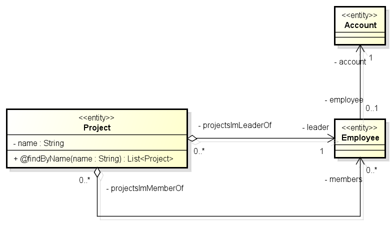
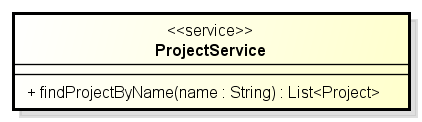
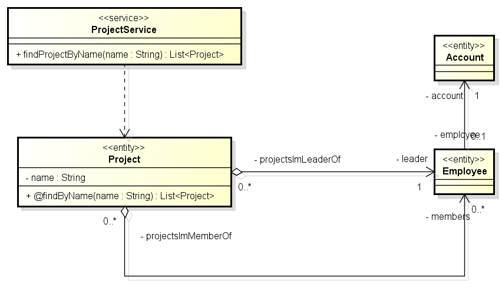

All the source code described in this tutorial is available on anycode tutorials bitbucket repository
For this tutorial, we consider a very (very) simple project management software model :

The most important part of this tutorial is to generate JPA entities in java language. So let's create JPA-ENTITY template as follows :
JPA-ENTITY-name.mda
${targetDir}/${c.getFullyQualifiedName("/")}.java JPA-ENTITY-content.mda:
<% if(c.hasStereotype("entity")) { %>
package ${c.owner.getFullyQualifiedName(".")};
@javax.persistence.Entity
${jpa.classifierSignature(c)} {
${jpa.primaryKey(c)}
<% def atts = c.attributes.findAll({!jpa.isIdentifier(it)}) %>
<% atts.each() { %>
${jpa.attribute(it)}
<% } %>
<% atts.each() { %>
${jpa.getter(it)}
${jpa.setter(it)}
<% } %>
}
<% } %> You'll notice that we only generate a content for class with stereotype 'entity' . This means that if a class does not have this stereotype, nothing will be generated at all. This is very convenient as you can model JPA and non-JPA classes in the same model.
jpa.primaryKkey method detects and generates entity's primary key attribute, getter and setter. Here is how detection works:
Using findAll with a closure in groovy we can iterate over attributes and relationships to be persisted in JPA entity. Any navigable (or unspecified navigable) association is included in the attributes. It generates association annotations automatically as well as default annotation options.
Navigability is an important point in relationship as it will tell JPA whether it is unidirectional or bidirectional. It will also help determining the owning side for one-to-one, one-to-many and many-to-many relationships. Here are the conditions for 2 classes A and B :
In our project tracker model, we want Project class to be the owning side for project members. JPA code will then be generated with the adequate 'mappedBy' option.
In our uml model, we add a service class with one method, as follows :

A service is generally designed as an interface and an implementation class. Let's create 2 templates : SERVICE-INTERFACE and SERVICE-IMPL :
SERVICE-INTERFACE-name.mda
${targetDir}/${c.getFullyQualifiedName("/")}/I${c.name}.java We customized class name with 'I' prefix for Interface.
SERVICE-INTERFACE-content.mda:
<% if(c.hasStereotype("service")) { %>
package ${c.owner.getFullyQualifiedName(".")};
import java.util.List;
import ${c.owner.owner.getFullyQualifiedName(".")}.core.*;
public interface I${c.name} {
<% c.operations.each { %>
${java.operationSignature(it)};
<% } %>
}
<% } %> Only 'service' stereotyped class will have an interface generated. This interface only consists in a list of operation signatures, generated with java.operationSignature method.
Let's proceed to service implementation:
SERVICE-IMPL-name.mda
${targetDir}/${c.getFullyQualifiedName("/")}/impl/${c.name}.java We decided to generate implementation in 'impl' sub-package.
SERVICE-IMPL-content.mda:
<% if (c.hasStereotype("service")) { %>
package ${c.owner.getFullyQualifiedName(".")}.impl;
import java.util.List;
import org.springframework.stereotype.*;
import org.springframework.beans.factory.annotation.*;
<% def basePackage = c.owner.owner.getFullyQualifiedName(".") %>
import ${basePackage}.core.*;
import ${basePackage}.dao.*;
import ${basePackage}.service.*;
@org.springframework.stereotype.Service
public class ${c.name} implements I${c.name} {
<% c.clientDependencies.each { %>
${springData.autowiredAttribute(it)}
<% } %>
<% c.operations.each { %>
${springData.operationImplementation(it)}
<% } %>
}
<% } %>Only 'service' stereotyped class will have an interface generated. It implements the interface. We use java.operationImplementation method to generate a body.
Our service and entities are generated but not wired together. A way to connect them is to create a dependency relation in UML, like this :

We can use this 'dependency' representation as a transformation rule to generated dao classes. Let's generate them with Spring Data for JPA. The latter currently adds JpaRepository class generation (see Spring Data JPA for further details)
DAO-name.mda
${targetDir}/${c.owner.getFullyQualifiedName("/")}/../dao/${c.name}Repository.java We decided to generate classes in 'dao' sub-package.
DAO-content.mda:
<%if(c.hasStereotype("entity")) {%>
package ${c.owner.owner.getFullyQualifiedName(".")}.dao;
import java.util.List;
import ${c.owner.getFullyQualifiedName(".")}.*;
@org.springframework.stereotype.Repository
public interface ${c.name}Repository extends org.springframework.data.jpa.repository.JpaRepository<${c.name},${jpa.primaryKeyDataType(c)}> {
<% c.operations.findAll({jpa.isFinderOperation(it)}).each { %>
${jpa.operationSignature(it)};
<% } %>
}
<% } %>UML dependency can be used in Anycode UML API through getClientDependencies() method. We just have to add the following piece of code in our SERVICE-IMPL template, using @springData directive :
[...]
<% c.clientDependencies.each { %>
${springData.autowiredAttribute(it)}
<%} %>
[...] This will add a reference to the above repository class, as well as a getter and a setter. On top of that spring @AutoWired annotation will be added.
Spring data make queries easy thanks to query methods. In the above diagram, you may have noticed a method on Project class : @findByName. This notation is inspired by AndroMDA project and can be used as a transformation rule to add query methods on the repository.
To do that, just add the following lines in DAO template :
[...]
<% c.operations.findAll({jpa.isFinderOperation(it)}).each { %>
${jpa.operationSignature(it)};
<% } %>
[...] jpa.operationSignature is the same as java.operationSignature except that it will take all methods starting with @ in the entity class and put them in the repository class.
The sources of this tutorial are available online here. It contains a maven project with HSQL unit tests run with Spring tests with custom data load.